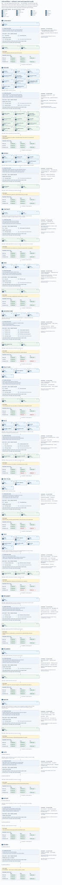

Select a stage marked “Zoom in” to see its internal process. Other stage buttons jump to their place in the full flow.
Each input and output has its own document symbol. Blue → IN and green OUT → distinguish their roles. Stage exits show Build, Rules and Test requirements for Rule code, Test code and Production code.
All eight applicable combinations use the same indicators: green Must pass; red May fail—never “must fail.” All start green and inherit their state until explicitly changed. These are stage-exit requirements, not observed results or planned expectations.
The dash means no tests of test code. Tests are grouped by the code they verify. CI/CD tests run at PR submission, not as a separate stage area.
Edit-scope panels use the file and change icons. Initial enforcement targets file boundaries; named changes are instruction/review checks until parser-backed validation exists. Delete/move grants are not implied.
This is a review draft. Purple notes identify undefined parts—not permission for an agent to fill them in during execution.
File modification legend · Full scalable image · Full PNG image